Операционная система Windows
Что такое Windows
Windows — это название операционной системы компьютера. У нее есть несколько версий, самые популярные из которых XP, 7, 10, 11. Разработана компанией Microsoft
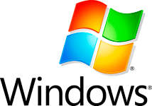Операционная система или сокращенно ОС — это самая важная программа на ПК. Без нее мы даже не смогли бы его включить. При помощи ОС мы управляем компьютером, то есть делаем за ним все то, что делаем — работаем, отдыхаем, пользуемся интернетом.
Когда мы включаем ПК, то видим картинку и всякие значки, кнопки, окошки и прочее. Вся эта красота, которую вы видите и используете, возможна только благодаря операционной системе. Если бы её не было, то при включении был бы только черный экран с английскими буквами и цифрами.
Windows — это одна из разновидностей ОС. Так сказать, ее марка. Как, например, марка автомобиля — Ауди, Фольксваген, БМВ.
У ОС есть свои «марки»: Linux, macOS и другие. Из них Виндовс — самая популярная в мире. Она установлена на большинстве компьютеров.
Существует несколько версий Windows:
- Устаревшие и малораспространенные: 95, 98, 2000, Me, XP, Vista и другие;
- Популярные: 7, 8, 10, 11.
Между собой они отличаются датой выпуска. Сейчас самой новой версией является одиннадцатая. Но многие по-прежнему работают на седьмой, десятой и даже на устаревшей XP. Эти редакции используют меньше ресурсов и подходят для старых и маломощных компьютеров.
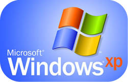На самом деле, не так важно, какая версия на вашем ПК. Все они друг на друга похожи — принцип работы один и тот же. Но самой стабильной на данный момент является десятая.
Как узнать версию
Проще всего узнать редакцию своей ОС по Рабочему столу — той картинке и значкам, которые появляются при включении ПК. Они отличаются в разных редакциях.
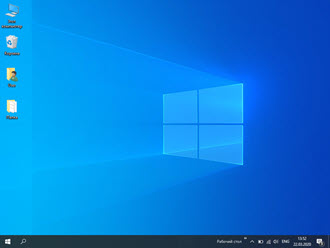 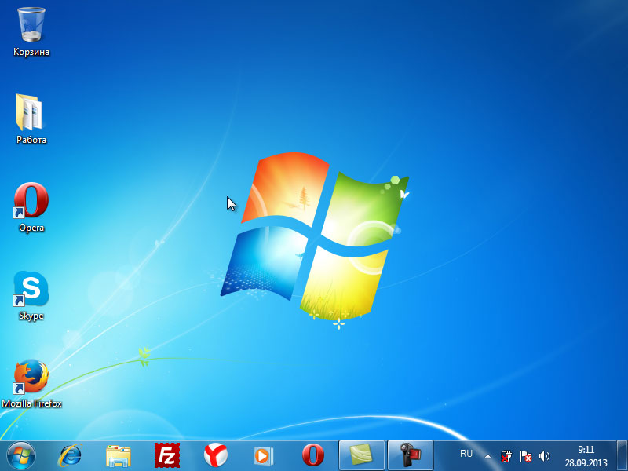Еще посмотреть какая у вас ОС можно через значок «Этот компьютер» или «Мой компьютер». Для этого щелкните по нему правой кнопкой мыши и из списка выберите пункт «Свойства».
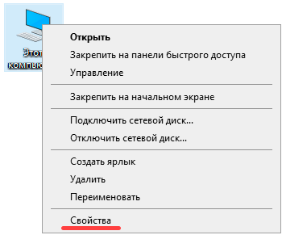Появится окно с указанием версии.

Или откройте «Пуск», нажмите правой кнопкой мыши по надписи «Компьютер» и выберите «Свойства».
max-width: 330px; 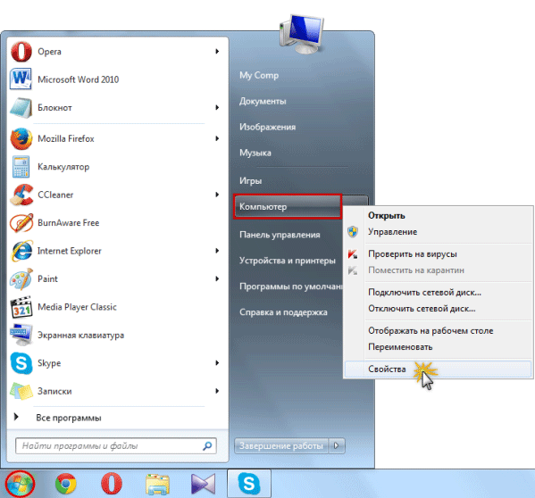 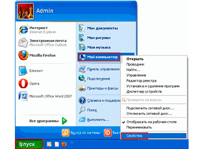Появится информация об ОС.
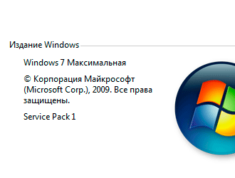 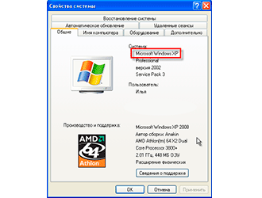Если при нажатии на «Пуск» в списке нет пункта «Компьютер», тогда щелкните по иконке шестеренки слева и выберите «Параметры».
Или можно кликнуть по кнопке «Пуск» правой клавишей мыши и выбрать «Параметры».
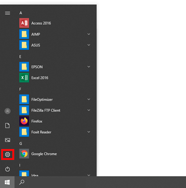Появится окошко, в котором перейдите в раздел «Система».
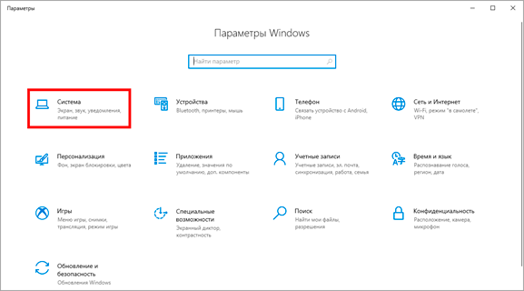С левой стороны (в самом низу) щелкните по пункту «О системе».
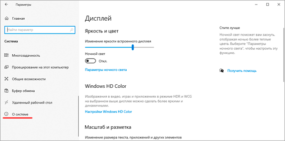Отобразится информация о ПК. И если опуститься вниз, то будет указана версия Windows.
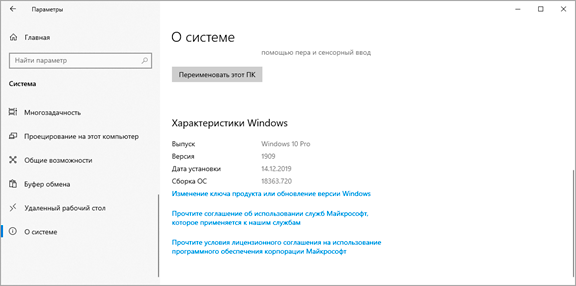